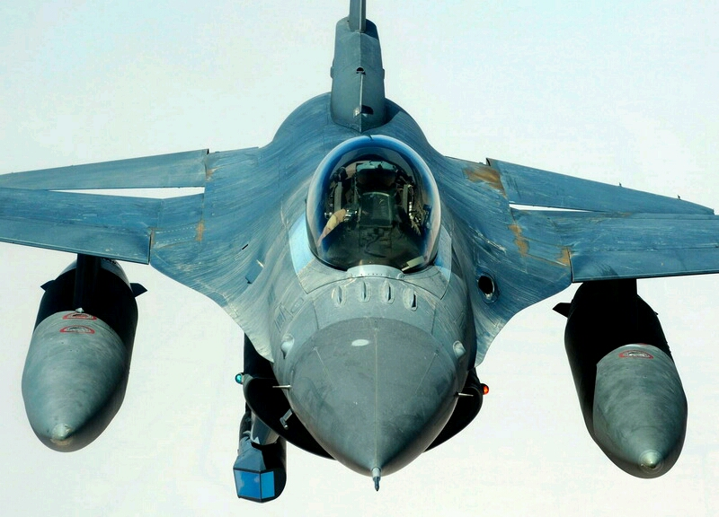
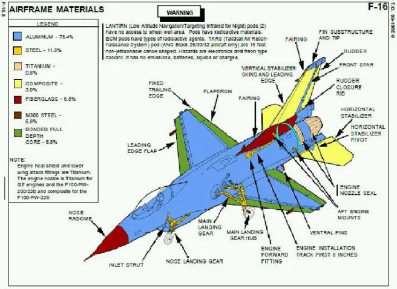
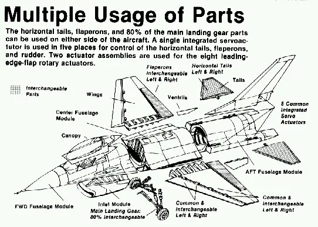
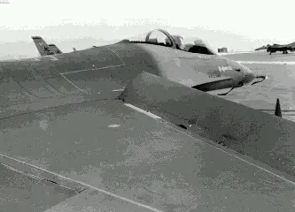
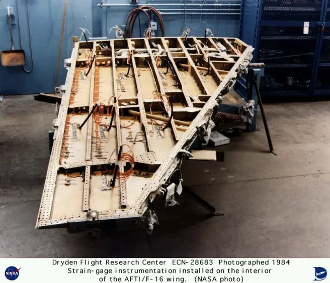
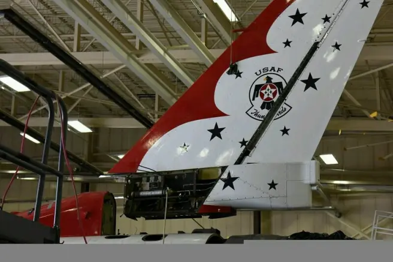
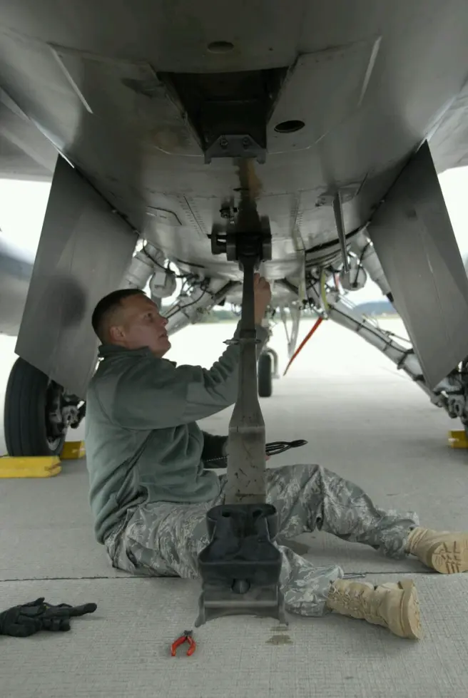
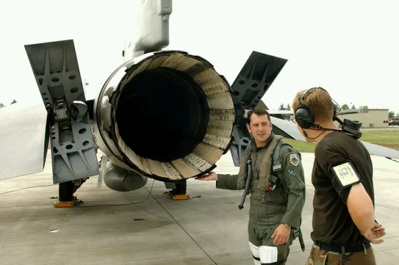
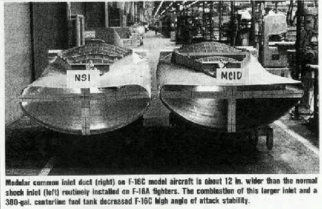
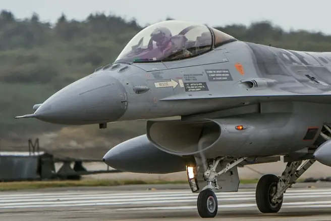

“蝰蛇”的秘密，透视F-16“战隼”战斗机（上）
发布时间：2019-06-04
原作者：Armstrong
文章地址：空军之翼
F-16选用了边条翼，空战襟翼、翼身融合体、放宽静稳定度、电传操纵和高过载座舱等新技术来提高飞机的空战性能。为了降低成本，该机的许多部件都可以左右互换，包括平尾、襟副翼、80%的主起落架组件，以及许多驱动机构。

机身
F-16的结构材料80.6%是传统铝合金、7.6%是合金钢、2.8%是复合材料、1.5%是钛合金、7.5%是其他材料，60%的结构件使用合金板材制造。为了降低成本，F-16在设计上尽量减少特殊材料的使用。
机身分为3个主要部分制造——前段、中段和后段。同样是为了降低成本，机身采用了由隔框和纵梁组成的常规结构，前部工艺分离面在座舱后方，后部分离面在垂尾前方。F-16采用半硬壳式结构，机身外形短粗，采用翼身融合体形式与机翼连接，使机身与机翼圆滑地结合在一起，从而减小了阻力，提高了升阻比，增加了刚度，增加机身容积9%，并使机体减重258千克，也对减小雷达反射面积很有好处。


机翼
F-16采用悬臂式中单翼，平面几何形状为切角三角形。前缘后掠角40度。展弦比约为3.0，相对厚度约为4%，基本翼型是NACA64A-204。早期的风洞测试显示该机需要前缘襟翼来增加大迎角时的方向稳定性并提高升力。前缘机动襟翼和后缘襟副翼的偏转速度可达35度/秒，按照当前的气动要求来改变机翼弯度。前缘襟翼在提高了大迎角状态下的方向稳定性并维持了升力，降低了抖振，这个增升设备允许F-16采用了短翼展的小型机翼，从而减重222千克。
但是前缘襟翼驱动机构安装位置仅有3.81厘米深的空间，所以该组件的设计成为了巨大的挑战。1982年春由于前缘襟翼驱动机构失效，导致几起F-16在飞行前缘襟翼上偏的事故。美国空军停飞了所有飞行时间超过200小时的F-16，检查发现前缘襟翼驱动机构中负责定位部件已经过度磨损，有超过40架飞机需要维修。

F-16的切尖三角形机翼效率很高，前缘襟翼可随迎角和马赫数的变化而自动偏转以改变机翼弯度，使飞机在大迎角时仍保持有效的升力。机翼后缘内侧是单片式襟副翼，融合了襟翼和副翼的功能，它既可作为一般襟翼来增加升力，又可左右差动进行横向操纵，在起降时可下偏20度。
F-16的机翼翼根与机身上表面融为一体，翼身融合可以增加机内空间，从而增加内油容量。实际上F-16正常起飞重量的31%是燃料重量，保证了“战隼”的航程。此外逐渐增厚的翼根也使机翼的强度比传统设计高。
机翼前缘根部与前机身两侧的边条平滑地融为一体，在大迎角状态下边条拉出涡流，维持了流经机翼内侧上表面附面层的能量，推迟了翼根的失速并维持了方向稳定性。涡流的能量也使前机身产生升力，降低了尾翼的配平阻力。通过保持内翼上表面附面层的高能量，边条也允许减小翼面积，这大约节省了227千克的重量。机翼内部结构由5根翼梁和11根翼肋组成，上下安装有使用单片铝合金车削制造的整体板蒙皮。

尾翼
在设计阶段的早期，通用动力考虑了单垂尾和双垂尾布局，风洞试验显示前缘边条涡流可加强方向稳定性，但采用双垂尾时这种形状的边条却会降低高迎角时的稳定性。于是通用动力得出结论——高度足够的单垂尾可以达成满意的效果，双垂尾 反而会大大增加研制风险。
F-16的单垂尾较高，安定面大，后缘是全翼展的方向舵，大迎角时安定性好。垂尾采用铝合金制造的多梁和多肋结构，碳纤维复合材料蒙皮，垂尾根部前缘的背鳍使用玻璃纤维制造。机身下方的两片面积较大的腹鳍采用玻璃纤维制造，腹鳍间还有钢板制造的紧急拦阻钩。


翼根翼身融合体向后延伸形成尾撑，全动平尾安装在尾撑末端两侧。尾撑末端是可上下张开的减速板，最大张开角度上下各60度。平尾平面几何外形与机翼类似，下反角25度，由碳纤维复合材料的 蒙皮、铝蜂窝夹芯、钛合金的梁及钢制的前缘组成。

进气口
F-16采用固定几何形状的腹部进气口，被称为正激波进气口（NSI），上唇装有附面层隔板，与机身连接处有固定的附面层排放坡道。从Block 30开始安装F110发动机的F-16采用模块化通用进气道（MCID），提高了空气流量。F-16的进气口和前起落架舱一起是模块式结构，便于以后的改进和升级。为了提高进气道的刚性，进气口内安装了一根支撑柱。固定式进气口为跨音速格斗而优化，使F-16的最大速度被限制在了2马赫之下。采用固定式进气口比采用可调式进气口节约重量180千克。

腹部进气布局可在广泛的飞行条件和机动中实现最小的进气干扰，并可避免吸入机炮的烟雾。F-16前机身扁平的下表面在各种机动中都能对气流起到理顺和预压缩作用，将发动机进气的迎角突然变化降至最低。例如在飞机迎角25度时，进气口的本地气流迎角仅有10度，而相比之下此时两侧进气道本地迎角已达35度。进气口下唇距地面仅0.97米高，但在实际使用因跑道异物导致的发动机外来物损伤（FOD）发生率很低。
